01La demande
DPDirection produit
Les clients aimeraient envoyer un document à quelqu’un qui n’a pas de compte. Genre… un lien ? C’est rapide, non ?
Romain est en train de poser des questions
Développeur fullstack TypeScript et product engineer à Caen. D’un besoin flou à une feature en prod : les agents IA accélèrent, les tests sécurisent.
TypeScript fullstack · 10+ ansArchitecture logicielleDesign patternsIntégration IAOrchestration d’agents IASécuritéDDD · TDD
Une demande floue, sept étapes, une feature livrée. Scrolle, je m’occupe du reste.
Exemple fictif, méthode réelle.Les clients aimeraient envoyer un document à quelqu’un qui n’a pas de compte. Genre… un lien ? C’est rapide, non ?
async createLink(docId: DocumentId, by: User) { const doc = await this.documents.get(docId); this.policy.assertCanShare(doc, by); const link = ShareLink.readOnly(doc, doc.project.linkTtl); await this.links.save(link); this.events.publish(new LinkCreated(link.id, by.id)); } // Petit, lisible, testé.
Je délègue la frappe à Claude Code, pas les décisions. Les specs, les tests et la relecture restent de mon côté.
J’ai conçu et mené seul un chatbot que nos clients intègrent via un SDK. Derrière, des agents administrables et versionnés depuis notre backoffice.
Grill, spec, tickets. L’agent ne commence jamais sans savoir exactement quoi construire.
TDD systématique. Les tests disent ce qui est vrai, pas l’enthousiasme de l’agent.
Je relis chaque diff. Lint, tests et build passent en local avant tout commit, comme en CI.
Les agents vont vite. Le cadre et la vérification, c’est mon boulot.
Des fondations réseau jusqu’au poste de référent technique. Chaque étage ajoute des compétences, aucun n’en retire.
Bac Pro réseaux, technicien matériel
Je démontais des PC avant de les programmer.
Études, stage PHP chez AIR COM
Linux, Bash, SQL, et mes premiers outils métier en PHP.
Side project · Normandie Incubation
Un assistant vocal maison, quand Alexa débarquait à peine.
Dev fullstack et ops
Sites, applis et logiciels, avec du Linux en prod.
Fullstack et DevOps, Côte d’Azur
Responsable de l’archi en microservices.
Dev web fullstack, Normandie et Paris
Du front Angular au déploiement, seul face au client.
Toute l’équipe de dev, 8 personnes
Les features les plus complexes, la review, les juniors, et la voix des devs au COMEX.
6 squads, 14 personnes
Cadrage, process, reporting. Un an pour confirmer que je préfère construire que gérer.
Fullstack engineer · Mylegitech
Retour au code, par choix. Architecture, passage en monorepo, review et dev piloté par des agents IA. Prochaine étape : chez vous ?
Un code propre n’a d’intérêt que s’il fait avancer le produit.
Microservices, messaging RabbitMQ, contrats clairs entre services. Mais découper n’est pas une fin en soi : on regroupe aussi quand ça fait gagner.
Un glossaire partagé, des ADR pour garder la trace des décisions, des modules profonds derrière des interfaces simples.
Je relis les MR de l’équipe pour garder une base cohérente, et j’explique toujours le pourquoi d’une remarque. Côté sécurité, je lance des audits assistés par IA (Claude Fable) sur nos produits et projets, puis je transforme les constats en rapport et en tickets de correction priorisés.
UX, métier, organisation : la qualité d’une feature se joue souvent autour du code.
Quatre produits que je conçois et code de bout en bout. Leurs dépôts GitHub sont privés : demandez l’accès au code d’un projet et je vous ouvre le dépôt en lecture seule pendant 30 jours.
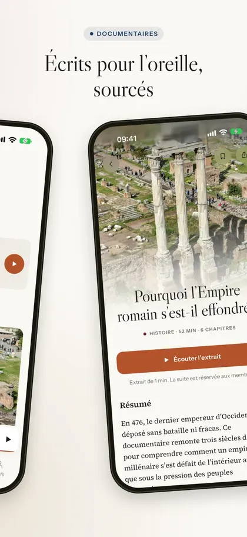
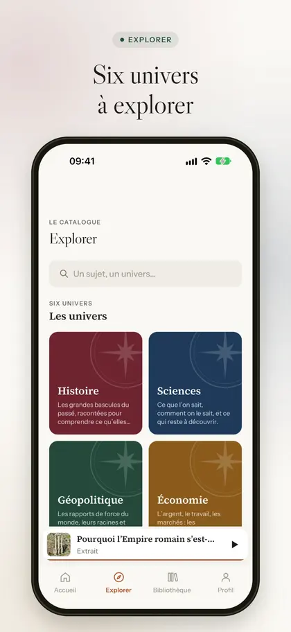
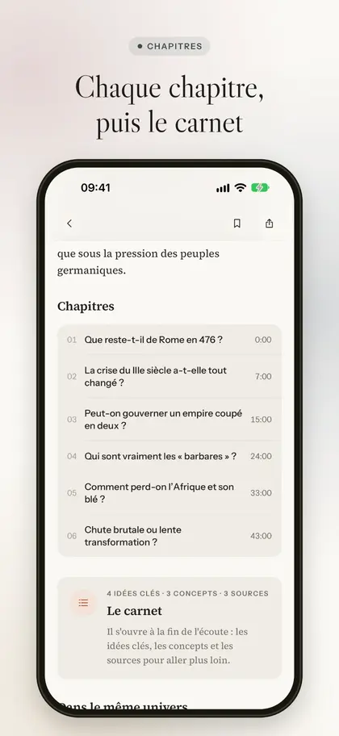
Un studio de documentaires audio de 30 à 60 minutes, écrits pour l’oreille. L’API, le site avec abonnement Stripe, le backoffice éditorial et l’app d’écoute vivent dans le même monorepo.
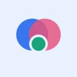
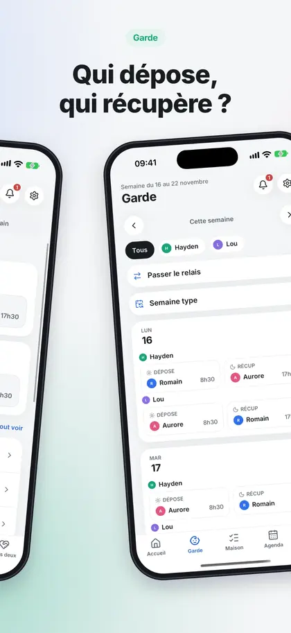
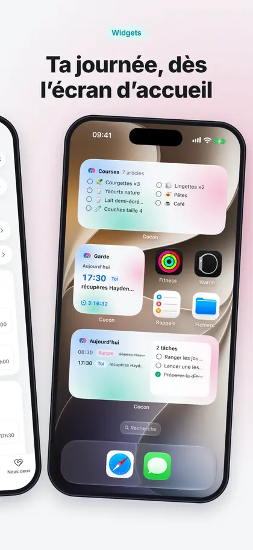
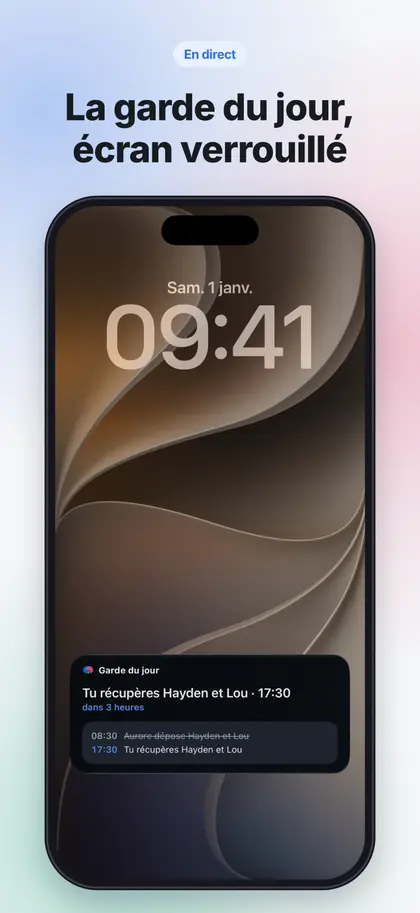
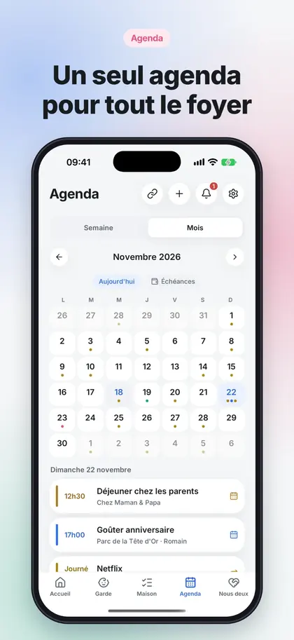
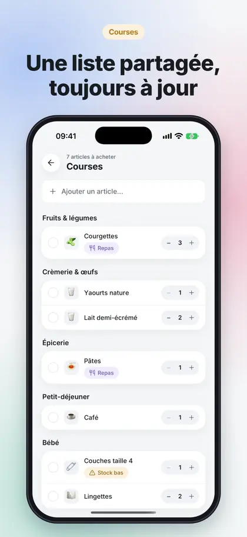
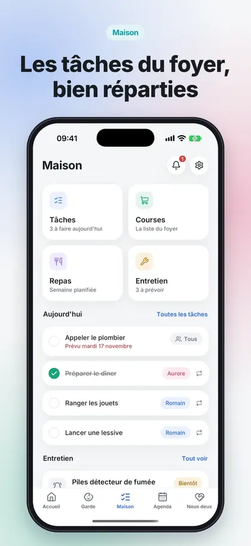
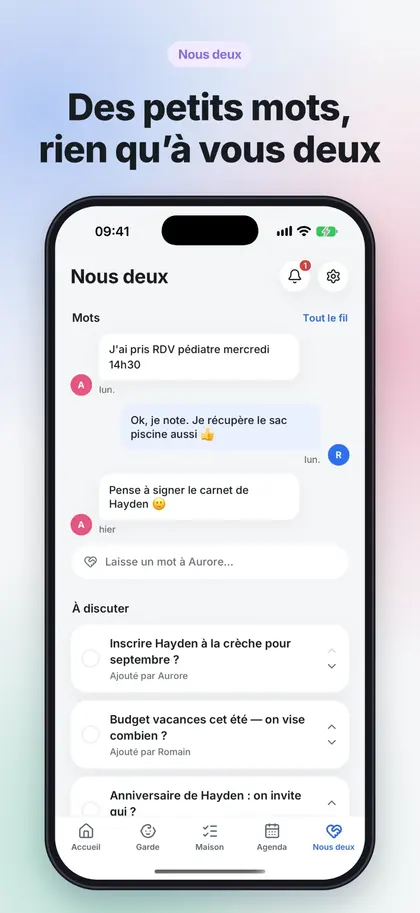
Qui dépose, qui récupère, ce qu’on mange ce soir : l’app partage la logistique du foyer entre les deux parents. Widgets iOS et Live Activity inclus, avec une API, un site vitrine et un back-office.
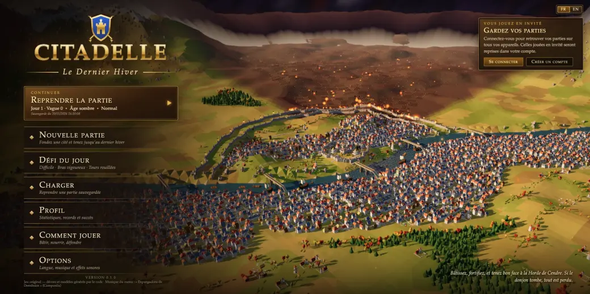
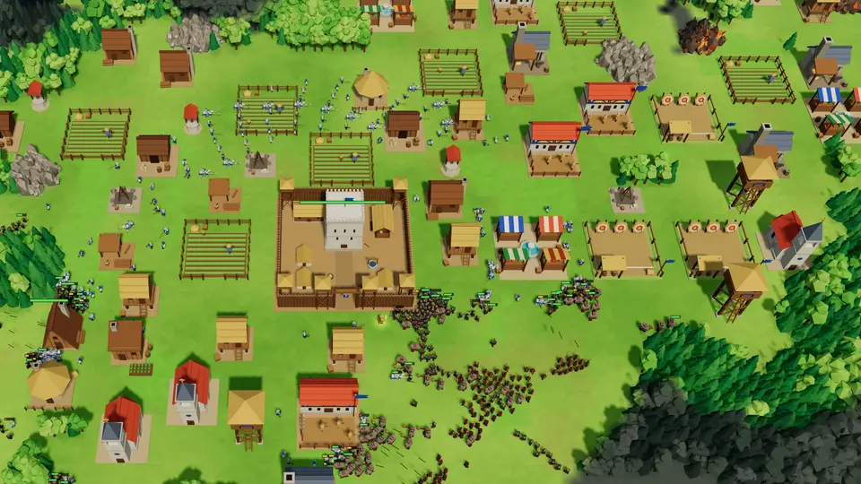
Bâtir une cité, la fortifier et tenir face à des hordes, en 3D dans le navigateur. Le dépôt réunit le jeu, le site vitrine, l’API des comptes et sauvegardes, le login, le backoffice et l’infra décrite en code.
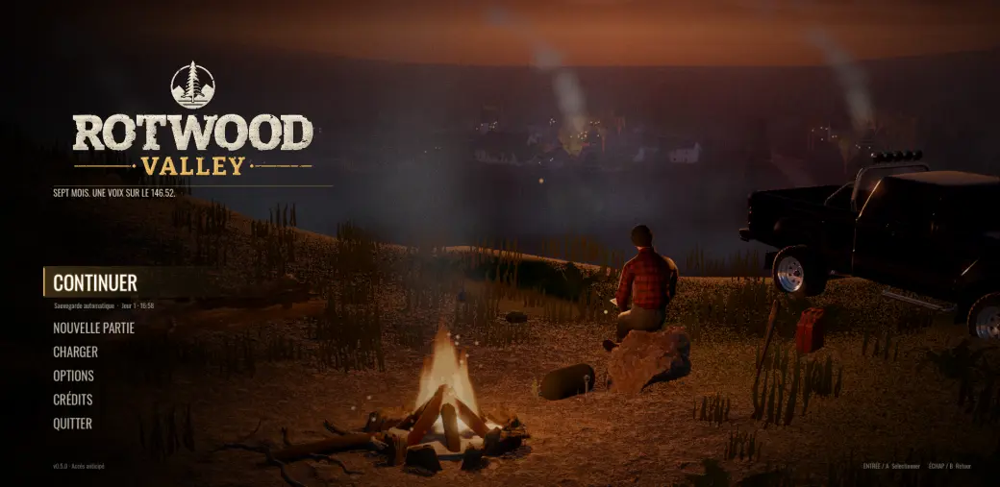
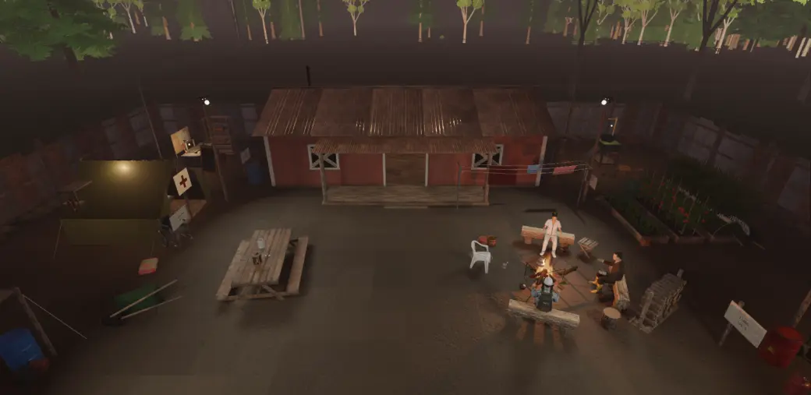
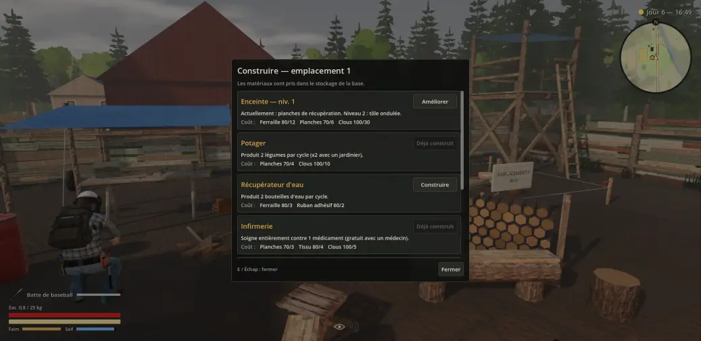
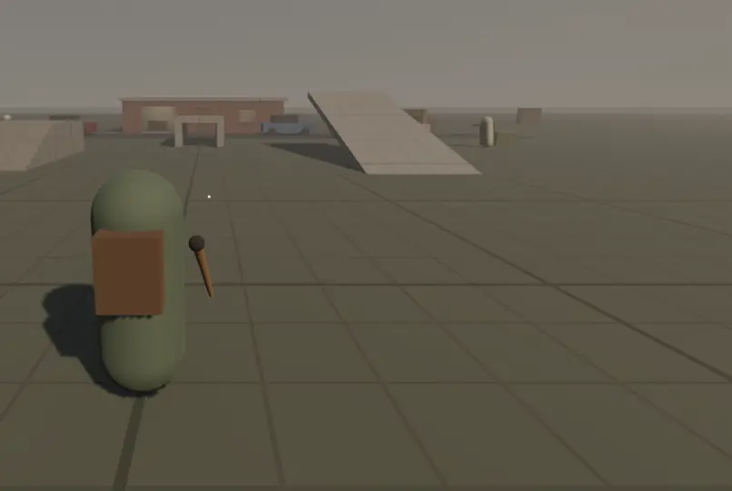
Un jeu de survie solo en monde ouvert, à la 3ᵉ personne. Une vallée de 4 × 4 km et onze localités à fouiller, une enquête menée par radio et documents, une base à bâtir avec ses survivants et à tenir les nuits de siège. Cycle jour/nuit, météo, entièrement doublé en français et en anglais. Gratuit, sans compte, mis à jour automatiquement au lancement.
La demande d’accès passe par une issue sur le dépôt public de ce site : votre pseudo GitHub y sera visible. Une fois validée, l’invitation part automatiquement et expire au bout de 30 jours.
Un fils de 19 mois : astreinte 24/7, aucun rollback possible, et pourtant le meilleur projet de ma vie.
Toujours un podcast dans les oreilles : des entrepreneurs qui racontent leur parcours, la tech et l’IA vues de l’intérieur, l’argent et l’investissement, les limites planétaires, de longs entretiens, et de la philo pour finir la semaine.
Mon premier projet de startup, un assistant vocal pour la maison. Il n’a pas survécu, mais l’envie de construire, si.
L’IA me passionne bien au-delà de la technique. Ce qu’elle change dans l’économie et le travail, dans les rapports de force entre pays, à l’école, et les questions éthiques qu’elle soulève. Je creuse ces sujets autant que les nouveaux modèles.
Je cherche un CDI de développeur fullstack senior, product engineer ou lead dev, en remote ou en hybride autour de Caen. Disponible sous 3 mois maximum.